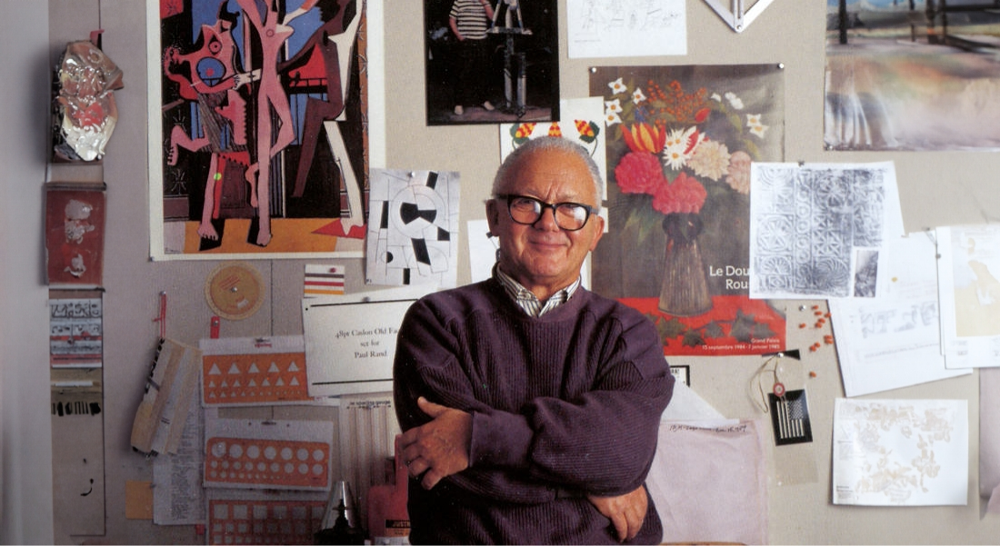
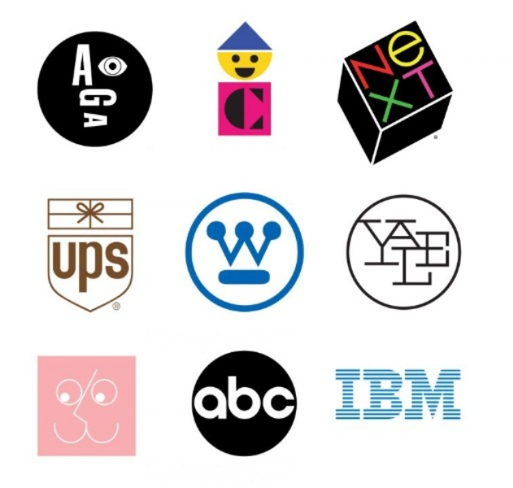
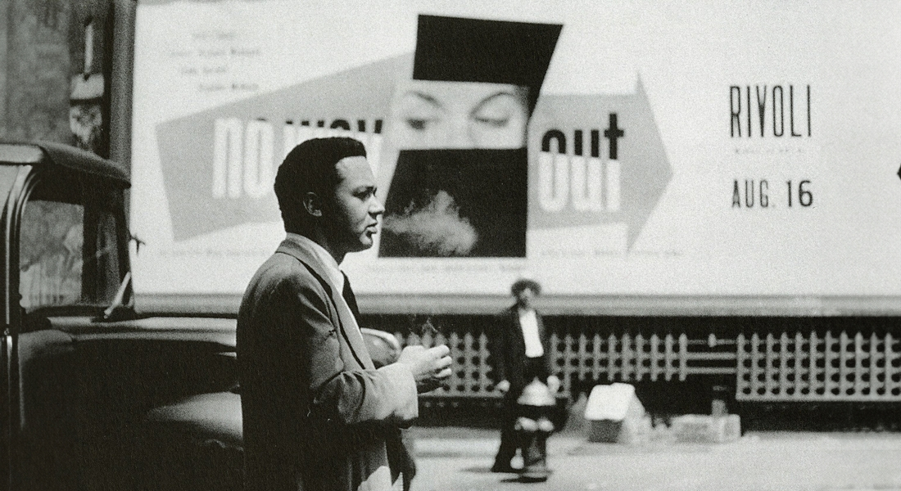

Interview

Q. What is design? (디자인이란 무엇인가요 ?)
A. Design is the method of putting form and content together. Design, just as art, has multiple definitions, there is no single definition. Design can be art. Design can be aesthetics. Design is so simple, that’s why it is so complicated.
(디자인은 형식과 내용을 결합하는 방법입니다. 디자인은 예술과 마찬가지로 여러 가지 정의가 있지만 단일 정의할 수 없습니다. 디자인은 예술이 될 수 있습니다. 디자인은 미학이 될 수 있습니다. 디자인이 너무 단순하기 때문에 복잡합니다.)
(디자인은 형식과 내용을 결합하는 방법입니다. 디자인은 예술과 마찬가지로 여러 가지 정의가 있지만 단일 정의할 수 없습니다. 디자인은 예술이 될 수 있습니다. 디자인은 미학이 될 수 있습니다. 디자인이 너무 단순하기 때문에 복잡합니다.)

Q. What is the difference between a designer and an artist?
(디자이너와 아티스트의 차이점은 무엇인가요?)
(디자이너와 아티스트의 차이점은 무엇인가요?)
A. There is no difference between a designer and an artist. They both work with form and content. I try to create art, whether I make it or not is not up to me, it’s up to God.
(디자이너와 아티스트 사이에는 차이가 없습니다. 둘 다 형식과 내용으로 작업합니다. 나는 예술을 창조하려고 노력하고, 내가 그것을 만들든 말든, 그것은 나에게 달려 있는 것이 아니라 신에게 달려 있습니다.)
(디자이너와 아티스트 사이에는 차이가 없습니다. 둘 다 형식과 내용으로 작업합니다. 나는 예술을 창조하려고 노력하고, 내가 그것을 만들든 말든, 그것은 나에게 달려 있는 것이 아니라 신에게 달려 있습니다.)
Q. What is the difference between good design and bad design?
(좋은 디자인과 나쁜 디자인의 차이점은 무엇인가요?)
(좋은 디자인과 나쁜 디자인의 차이점은 무엇인가요?)
A. A bad design is irrelevant. It is superficial, pretentious…basically like all the stuff you see out there today.
(나쁜 디자인은 관련이 없습니다. 그것은 피상적이고 가식적입니다. 기본적으로 오늘날 볼 수 있는 모든 것들과 같습니다.)
(나쁜 디자인은 관련이 없습니다. 그것은 피상적이고 가식적입니다. 기본적으로 오늘날 볼 수 있는 모든 것들과 같습니다.)

Q. What are the fundamental skills of a designer?
(디자이너의 기본 능력은 무엇인가요?)
(디자이너의 기본 능력은 무엇인가요?)
A. The fundamental skill is talent. Talent is a rare commodity. It’s all intuition. And you can’t teach intuition.
(기본 기술은 재능입니다. 재능은 희귀한 상품입니다. 그것은 모두 직관입니다. 그리고 직관을 가르칠 수 없습니다.)
(기본 기술은 재능입니다. 재능은 희귀한 상품입니다. 그것은 모두 직관입니다. 그리고 직관을 가르칠 수 없습니다.)

Q. Most of your designs have lasted for several decades. What would you say is your secret?
(당신의 디자인은 대부분 수십 년 동안 지속되었습니다. 당신의 비결은 무엇이라고 말하겠습니까?)
(당신의 디자인은 대부분 수십 년 동안 지속되었습니다. 당신의 비결은 무엇이라고 말하겠습니까?)
A. Keeping it simple. Being honest, I mean, completely objective about your work. Working very hard at it.
(단순하게 유지하는 것. 솔직히 말하자면, 저의 일에 대해 완전히 객관적입니다. 매우 열심히 일하고 있습니다.)
(단순하게 유지하는 것. 솔직히 말하자면, 저의 일에 대해 완전히 객관적입니다. 매우 열심히 일하고 있습니다.)
Q. How did you get started as a young designer?
(젊은 디자이너로 어떻게 시작하게 되었나요?)
(젊은 디자이너로 어떻게 시작하게 되었나요?)
A. I think you should ask instead, “How did I get started as a baby?”
(대신 "내가 어떻게 아기 때부터 시작하게 되었나요?"라고 물어야 할 것 같아요.)
(대신 "내가 어떻게 아기 때부터 시작하게 되었나요?"라고 물어야 할 것 같아요.)